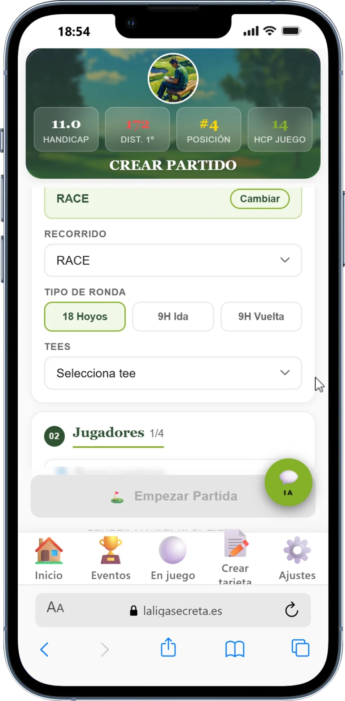
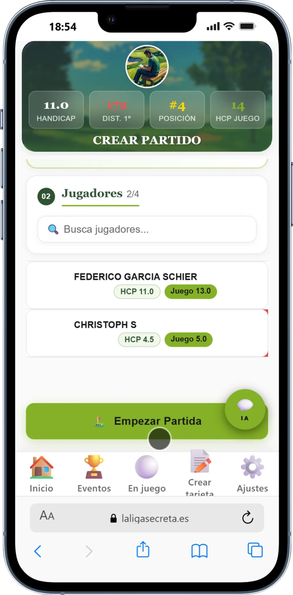
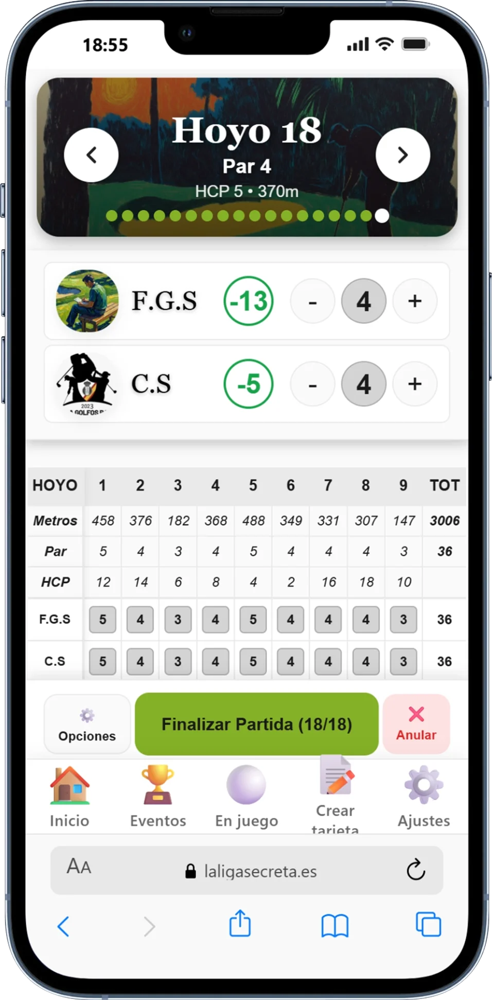
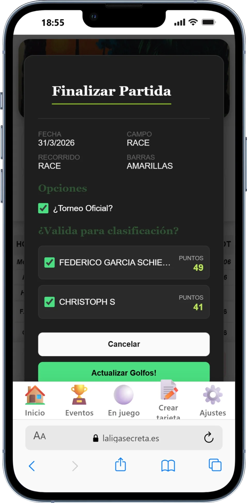
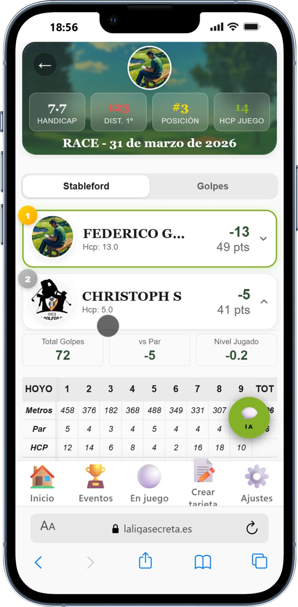
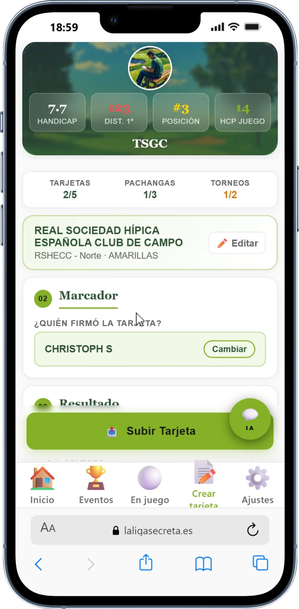
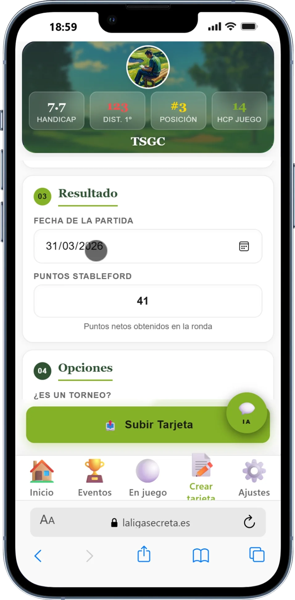
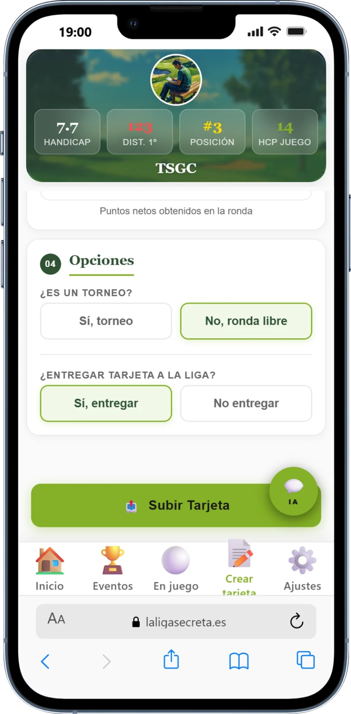

Hoyo a hoyo en tiempo real o subida manual del resultado final. Tú decides cómo registrar — la liga se actualiza igual.
Antes de salir al tee, configura el partido desde la app. El sistema muestra tu hándicap actual y el hándicap de juego calculado para ese campo — todo listo desde el primer hoyo.

Busca a los jugadores de tu liga que van a jugar contigo. Cada uno aparece con su hándicap WHS y su hándicap de juego calculado para el campo seleccionado — para que todos sepan los golpes que dan.

Hoyo a hoyo, introduce los golpes de cada jugador con los botones + y −. La scorecard se actualiza al instante: Stableford acumulado, golpes totales y posición provisional en tiempo real.
La app funciona con conectividad limitada. Si pierdes señal en mitad del campo, los datos se guardan localmente y se sincronizan cuando recuperas cobertura.

Al completar el último hoyo, la app te muestra la pantalla de entrega. Confirma si la ronda puntúa para la clasificación de la liga y si se trata de un torneo oficial.

Una vez entregada la tarjeta, el resumen de la partida muestra el ranking de la ronda, los puntos Stableford de cada jugador y la tarjeta hoyo a hoyo completa. También puedes ver el equivalente en golpes totales.

Si prefieres registrar la ronda en papel, con la app del campo o con cualquier otra aplicación de golf, no hay ningún problema. Al terminar, entra en The Secret Golf Club, introduce el resultado en tres pasos y el ranking se actualiza al instante.
Elige el recorrido donde has jugado — la app autocompleta el slope y course rating para calcular el hándicap de juego correctamente. Luego indica quién ha firmado tu tarjeta como testigo, que también debe ser jugador de la liga.

Solo necesitas dos datos: la fecha en que se jugó la ronda y los puntos Stableford netos totales. Sin hoyo a hoyo, sin capturas adicionales — el dato que cuenta es el resultado final.
El hándicap WHS se actualiza exactamente igual que si hubieras registrado la ronda hoyo a hoyo. El método de captura no afecta al cálculo.

El último paso te da control total sobre cómo computa la ronda. Una ronda puede registrarse sin que puntúe para la clasificación — sigue contando para el hándicap y las estadísticas.

Descarga la app, configura el partido antes de salir al tee y que el campo haga el resto. El ranking se actualiza solo al entregar la tarjeta.